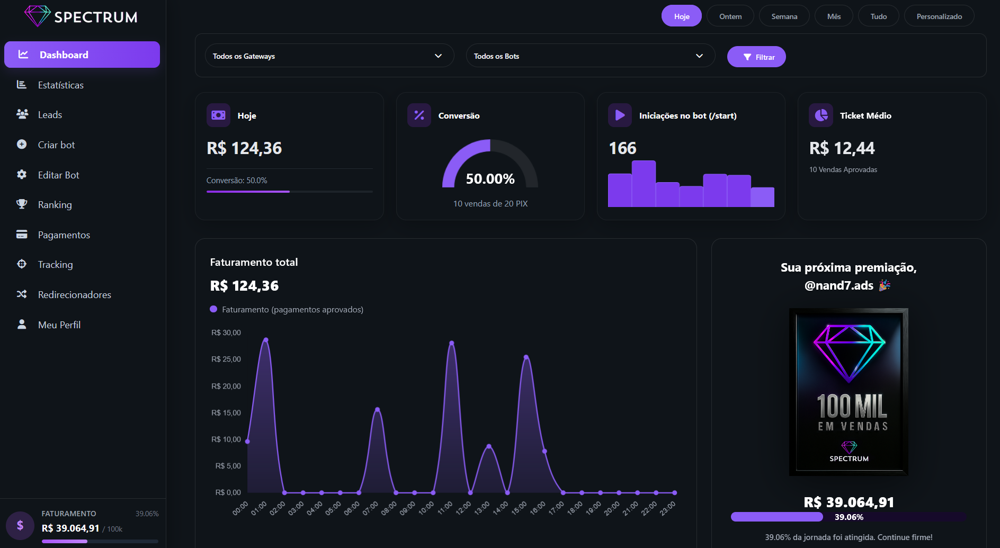
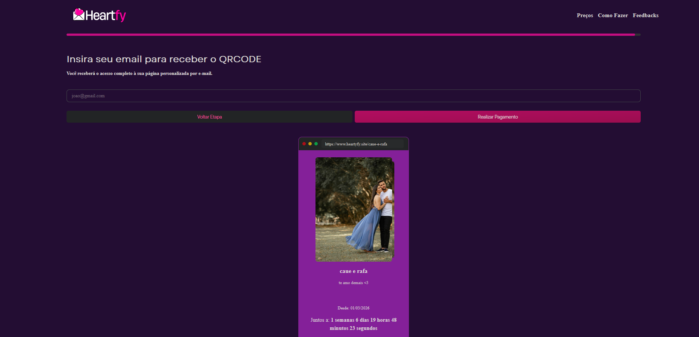
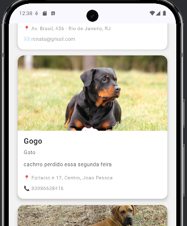

Sou um desenvolvedor FullStack especializado em arquitetura escalável, código limpo e operações de produção. Tenho experiência mantendo sistemas que processam milhares de requisições diárias com alta performance e confiabilidade. Meu diferencial está em refatoração estratégica, otimização de código e implementação de pipelines CI/CD robustos que garantem qualidade e velocidade.
Trabalho com Python, JavaScript/TypeScript, Java e PostgreSQL, criando soluções que não apenas funcionam, mas que são mantíveis, testáveis e preparadas para escala. Especializado em identificar gargalos de performance, estruturar código para reduzir débito técnico e implementar práticas DevOps que automatizam deploy e testes. Liderei projetos como SPECTRUM (180+ players ativos) e diversos produtos web em React, Next.js, Node.js com arquitetura de banco de dados otimizada.
Minha abordagem combina planejamento rigoroso, execução limpa e manutenção proativa. Sou apaixonado por transformar requisitos em código elegante, performático e sustentável — tanto em estruturas monolíticas quanto em ecossistemas de microsserviços. Se você busca alguém que entenda tanto desenvolvimento quanto produção, que escreve código pensando em futuro, estou aqui.
Full-Stack Architect & Founder da Spectrum Bots
SPECTRUM - Bot Manager Telegram com dashboard analytics, downsell inteligente e integração multi-gateway (WiinPay, PushinPay, SyncPay)
Desenvolvedor FullStack Freelancer
Desenvolvimento de aplicações web escaláveis com React, Next.js, Node.js e integração de APIs. Gerenciamento de projetos completos do design ao deploy.


